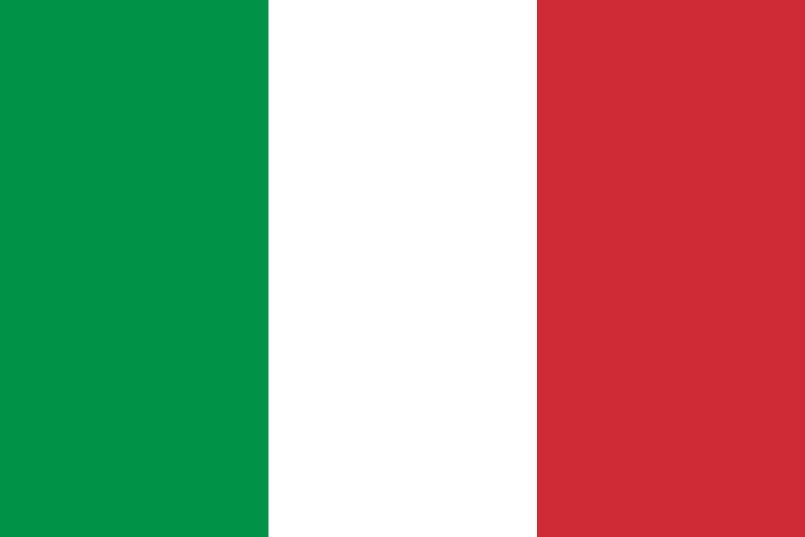

Dit is Brazilië, het is het land met de meeste wereld kampioenschappen ooit, het ligt in Zuid-Amerika, naast bijvoorbeeld Uruguay en Argentinië. Hieronder staat nog meer informatie over dit land.
Dit is Brazilië, het is het land met de meeste wereld kampioenschappen ooit, het ligt in Zuid-Amerika, naast bijvoorbeeld Uruguay en Argentinië. Hieronder staat nog meer informatie over dit land.
- Aantal Kampioenschappen: 5
- Aantal Punten Aller Tijden: 237
- Win Percentage: 67%
- Gemiddeld Aantal Punten Per Wedstrijd: 2.17
- Plaats 2018: Tot kwartfinale gekomen
- Doelsaldo Aller Tijden: 124
- Aantal overwinningen: 73
 Dit is Duitsland, het is het land met de op een na meeste wereld kampioenschappen ooit, het ligt in Europa, naast bijvoorbeeld Nederland en België. Hieronder staat nog meer informatie over dit land.
Dit is Duitsland, het is het land met de op een na meeste wereld kampioenschappen ooit, het ligt in Europa, naast bijvoorbeeld Nederland en België. Hieronder staat nog meer informatie over dit land.
- Aantal Kampioenschappen: 4
- Aantal Punten Aller Tijden: 101
- Win Percentage: 61%
- Gemiddeld Aantal Punten Per Wedstrijd: 2.03
- Plaats 2018: Niet uit groepsfase gekomen
- Doelsaldo Aller Tijden: 101
- Aantal overwinningen: 67
 Dit is Italië, het is het land dat 3e ligt qua meeste wereld kampioenschappen ooit, het ligt in Europa, naast bijvoorbeeld Frankrijk en Zwitserland. Hieronder staat nog meer informatie over dit land.
- Aantal Kampioenschappen: 4
- Aantal Punten Aller Tijden: 156
- Win Percentage: 54%
- Gemiddeld Aantal Punten Per Wedstrijd: 1.88
- Plaats 2018: Niet gekwalificeerd
- Doelsaldo Aller Tijden: 51
- Aantal overwinningen: 45
Dit is Argentinië, het is het land dat 4e ligt qua meeste wereld kampioenschappen ooit, het ligt in Zuid-Amerika, naast bijvoorbeeld Brazilië en Uruguay. Hieronder staat nog meer informatie over dit land.
- Aantal Kampioenschappen: 2
- Aantal Punten Aller Tijden: 144
- Win Percentage: 53%
- Gemiddeld Aantal Punten Per Wedstrijd: 1.78
- Plaats 2018: Achtste finale
- Doelsaldo Aller Tijden: 44
- Aantal overwinningen: 43